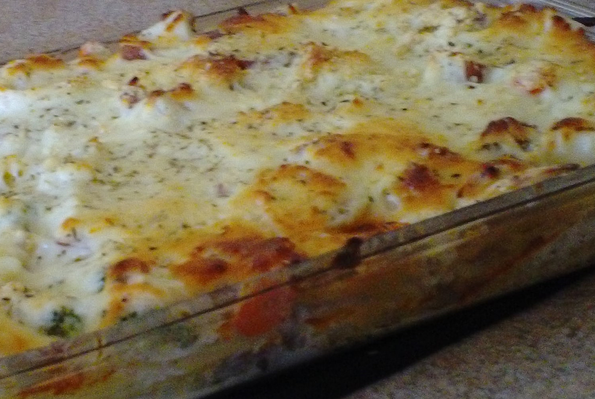

Lasanga

Description
Lasagna is a type of pasta, possibly one of the oldest types made
from flat sheets alternating with ragu, vegetables, cheeses, seasoning and spices.
This dish orginally comes from italy
Ingredients
- 16oz pack of lasanga noodles
- 1lb lean ground beef
- salt
- pepper
- 16oz jar spaghetti sauce
- 1/2 pound of preffered cheese
- 1 pint ricotta cheese
Steps
- step 1) Bring a large pot of lightly salted water to a boil. Add pasta and cook for 8 to 10 minutes or until al dente; drain.
- step 2) Preheat oven to 350 degrees F (175 degrees C). In a large skillet over medium-high heat, brown beef and season with salt and pepper; drain. Stir in spaghetti sauce and garlic and simmer 5 minutes.
- step 3) In a medium bowl, combine mozzarella, Cheddar and ricotta; stir well. In 9x13 inch pan, alternate layers of noodles, meat mixture and cheese mixture until pan is filled.
- step 4) Bake in preheated oven for 30 minutes, or until cheese is melted and bubbly.